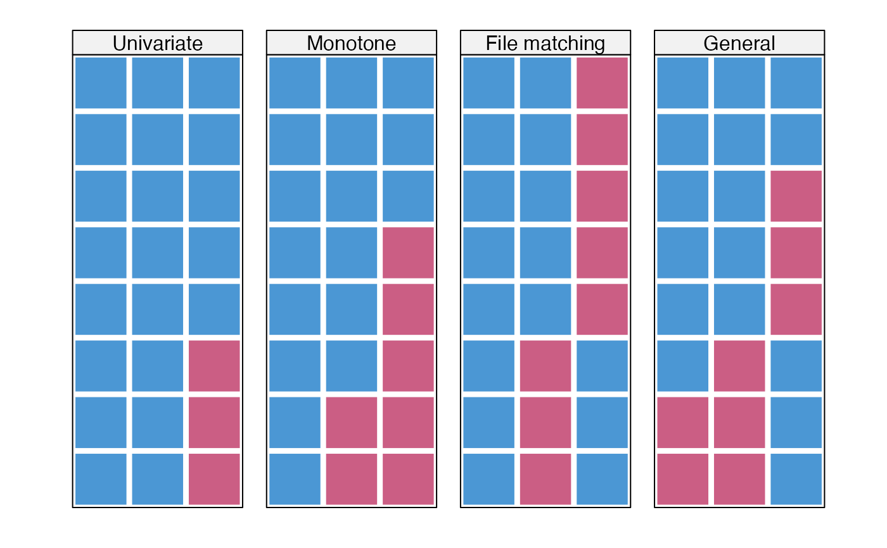
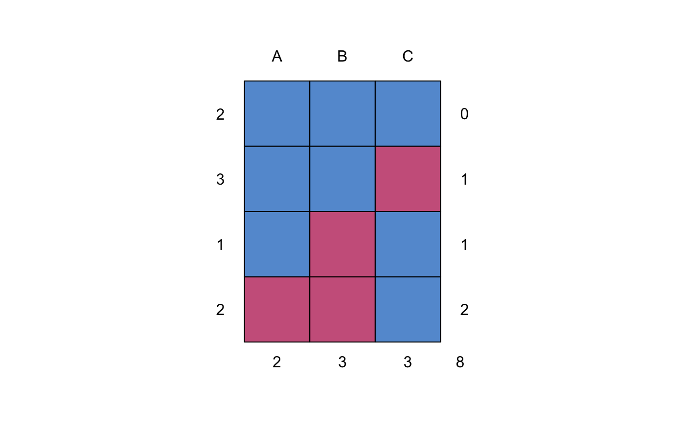
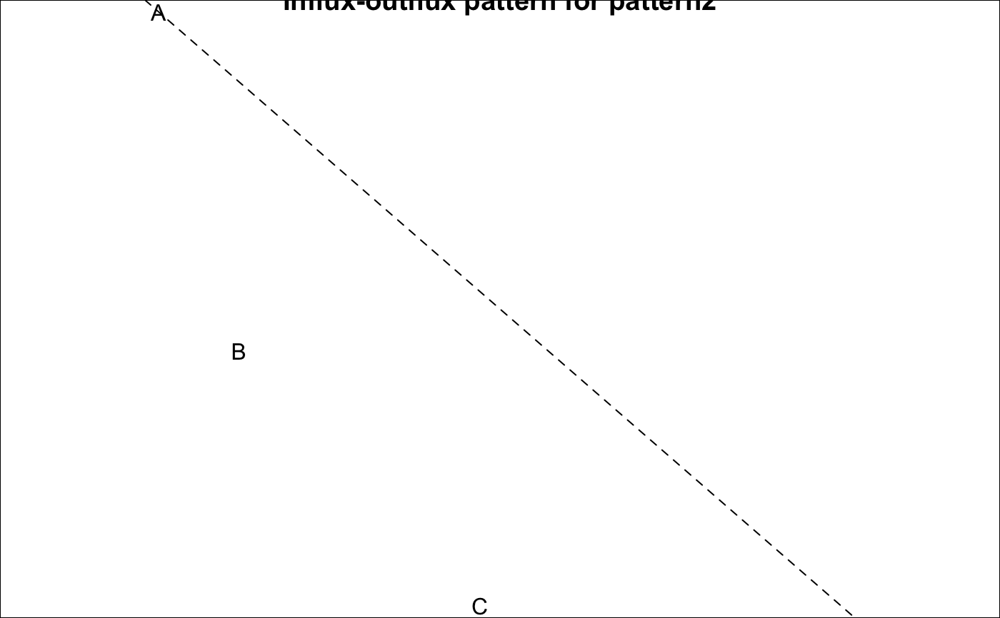

Four simple datasets with various missing data patterns
Data with a univariate missing data pattern
Data with a monotone missing data pattern
Data with a file matching missing data pattern
Data with a general missing data pattern
Van Buuren, S. (2018). Flexible Imputation of Missing Data. Second Edition. Chapman & Hall/CRC. Boca Raton, FL.
Van Buuren (2012) uses these four artificial datasets to illustrate various missing data patterns.
#> A B C #> 25 26 88 32 #> 26 42 66 21 #> 27 86 54 NA #> 28 9 92 NA #> 29 20 83 NA #> 30 89 NA 41 #> 31 NA NA 35 #> 32 NA NA 33data <- rbind(pattern1, pattern2, pattern3, pattern4) mdpat <- cbind(expand.grid(rec = 8:1, pat = 1:4, var = 1:3), r = as.numeric(as.vector(is.na(data)))) types <- c("Univariate", "Monotone", "File matching", "General") tp41 <- levelplot(r ~ var + rec | as.factor(pat), data = mdpat, as.table = TRUE, aspect = "iso", shrink = c(0.9), col.regions = mdc(1:2), colorkey = FALSE, scales = list(draw = FALSE), xlab = "", ylab = "", between = list(x = 1, y = 0), strip = strip.custom( bg = "grey95", style = 1, factor.levels = types ) ) print(tp41)#> A B C #> 2 1 1 1 0 #> 3 1 1 0 1 #> 1 1 0 1 1 #> 2 0 0 1 2 #> 2 3 3 8#> $rr #> A B C #> A 6 5 3 #> B 5 5 2 #> C 3 2 5 #> #> $rm #> A B C #> A 0 1 3 #> B 0 0 3 #> C 2 3 0 #> #> $mr #> A B C #> A 0 0 2 #> B 1 0 3 #> C 3 3 0 #> #> $mm #> A B C #> A 2 2 0 #> B 2 3 0 #> C 0 0 3 #>### proportion of usable cases p$mr / (p$mr + p$mm)#> A B C #> A 0.0000000 0 1 #> B 0.3333333 0 1 #> C 1.0000000 1 0### outbound statistics p$rm / (p$rm + p$rr)#> A B C #> A 0.0 0.1666667 0.5 #> B 0.0 0.0000000 0.6 #> C 0.4 0.6000000 0.0